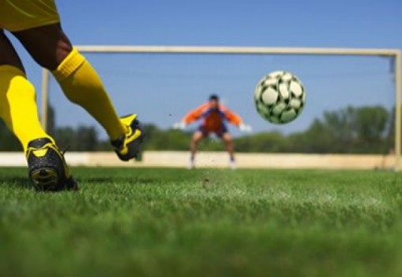

Física em Campo

Riscos da alta altitude
A cada edição da Copa do Mundo o país em que se é sitiado o evento muda e com
isso as características geográficas também um exemplo é a altitude e iremos
mostrar como isso afeta organismo humano.
Colocando isso em números podemos falar que a nível do mar o oxigênio no sangue
fica por volta de 159mmHg e a pressão do ar em 760mmmHg, entretanto em
altitudes de 3000m o oxigênio cai para 110mmHg, a mudança não parece ser muita,
entretanto com a pressão do ar maior o que resulta em um ar mais rarefeito onde o
corpo humano pela dificuldade de inalar oxigênio pode acabar entrando no estado
de hipóxia.
Consequências da falta de oxigênio
• Sonolência
• Dor Muscular
• Fadigas Muscular e Mental
• Cefaleia
• Náusea e Euforia
Riscos da alta altitude
Por conta dos riscos à saúde a FIFA em 2007 chegou a banir jogos internacionais em estádios com altitudes acima de 2500m, entretanto a Conmebol fez com que essa lei fosse revertida.
Para países com altitudes elevadas são necessários equipamentos especiais como cilindros de oxigênio no estádio, além de técnicas como “fly-in, fly-out”, que consiste em chegar pouco antes da partida e sair logo depois do país para menor prejuízo dos jogadores.
Técnicas de Chutes
Chutes Retos
Chutes retos com a bola no chão podem alcançar a velocidade de 120 Km/h a 170Km/h, mas tudo depende da força posta na hora do chute.
Para passes longos ou chutes forte de uma longa distância, os jogadores costumam chutar utilizando o peito do pé abaixo da bola com uma angulação de 45 graus para que com esse movimento, consiga fazer um ganho de força ou consiga levantar a bola fazendo ela percorrer uma distância longa.
Chutes com Calcanhar
Com calcanhar: normalmente utilizado para passes de curta distância ou chutes de perto, sendo responsável pela maioria dos gols devia a sua velocidade.
Para fazer esse movimento simples e ter um ganho de força alto, o jogador deve virar o pé para o lado direito ou esquerdo (tudo depende da perna) e colocar sua força na hora da finalização ou toque.
Força de um bom chute
Normalmente para obter força em um chute bom, devesse ter um impulso alto de 36km/h obtendo uma explosão de velocidade para obter uma força alta na hora do chute, lembrando que não é necessária tanta explosão na corrida quando se está passando ou toques altos pois para isso não é necessária explosão de velocidade e sim a força exercida abaixa ou na bola.
Para calcula a força do chute de um jogador devesse ter a massa da bola, força de intensidade, estado da bola e tempo.
Q= quantidade de movimento
M= massa
V= velocidade
T= tempo
Estado é fornecido normalmente.